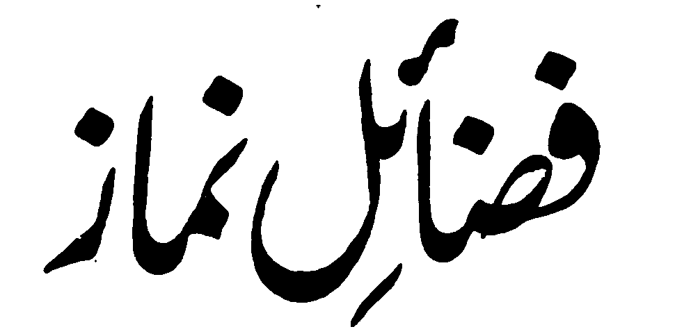

(Paganay a Kinitogalen)
Pho-on ko Itotogalen sa Basa English ko

A inisorat o
Maulana Muhammad Zakariyya Kandhlawi (Rahmatullahi ‘Alaihi)
Initogalen ko basa Meranaw Pho-on sa Pando-an o Pemamasela-an a Lokes ami a so
Hazratji Maulana In’amul Hassan (Rahmatullahi ‘Alaihi)
MASJID ABU BAKR AS-SIDDIQ
Basak, Malet-let, Marawi City PHILIPPINES, 1997